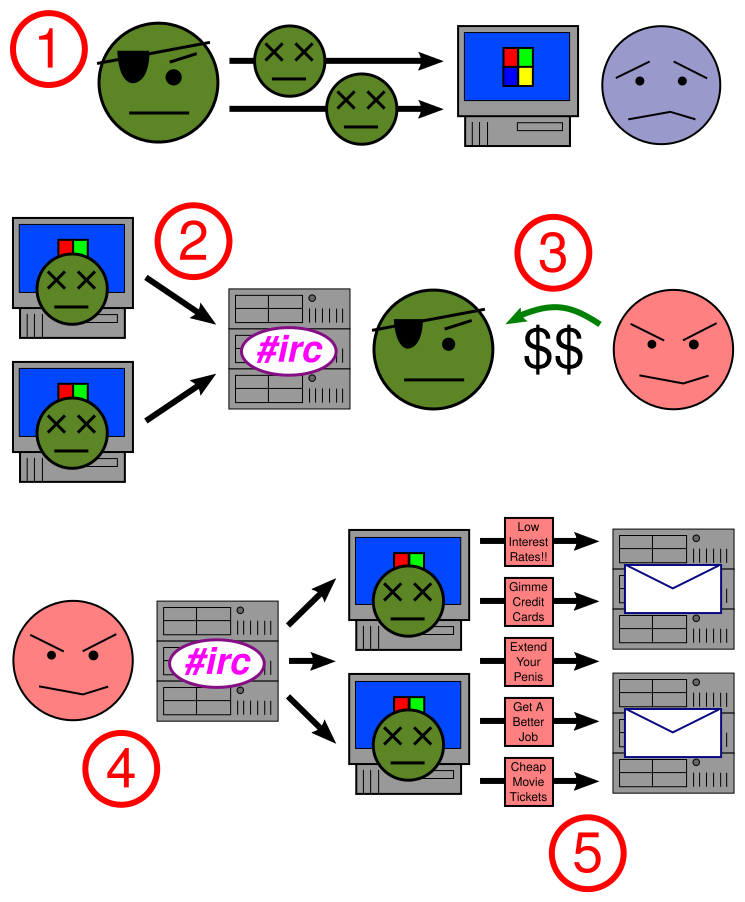

DUPLA 08 · AMEAÇA 1 DE 2
Bot
Um dispositivo infectado que passa a obedecer ordens remotas de um atacante — sem que o dono perceba nada de errado.
O que é um Bot?
Bot é um malware que, depois de infectar uma máquina, deixa ela disponível para ser comandada à distância por um atacante, sem que o dono perceba. Por isso, um dispositivo infectado costuma ser chamado de "zumbi": ele continua funcionando normalmente para o usuário, mas por trás está executando ordens de outra pessoa.
O termo vem de robot. Na cibersegurança, descreve qualquer sistema comprometido que age de forma autônoma seguindo instruções de um servidor de Comando e Controle (C2).
TAMBÉM CHAMADO DE
Zumbi / Zombie host
CONTROLE VIA
Servidor C2 (Command & Control)
ALVOS MAIS COMUNS
Dispositivos IoT, PCs, servidores
VISIBILIDADE
Quase nenhuma para o usuário
Como chegamos até aqui
Bots maliciosos existem desde o começo dos anos 2000, quando canais de IRC eram usados para mandar comandos a máquinas infectadas. Com a internet ficando mais rápida e mais dispositivos conectados, o problema escalou.
Anos 2000 — Primeiros bots via IRC
Canais de IRC eram usados como canal de comando. Cada mensagem postada no canal era interpretada como ordem pelos bots infectados.
Anos 2005–2010 — Botnets de spam
Redes como Storm e Conficker demonstraram que bots em massa podiam enviar bilhões de e-mails de spam por dia e resistir a tentativas de derrubada.
2016 — Mirai e a era IoT
O malware Mirai explorou roteadores, câmeras e gravadores digitais que ainda usavam senhas de fábrica, criando uma das maiores botnets já documentadas e derrubando serviços como Twitter e Netflix.
Hoje — Bots em qualquer dispositivo
Smartphones, smart TVs, eletrodomésticos conectados e dispositivos industriais são vetores ativos. A superfície de ataque cresce junto com o número de dispositivos IoT no mundo.
Como um bot opera
O ciclo de vida de um bot passa por cinco etapas principais, desde a infecção inicial até a execução de tarefas maliciosas em segundo plano.

Como a infecção acontece
Os principais caminhos que levam um dispositivo a se tornar um bot são:
VULNERABILIDADE
Exploração de falhas em serviços expostos na internet, principalmente em dispositivos IoT sem atualização de firmware.
CREDENCIAL FRACA
Dispositivos que mantêm a senha padrão de fábrica — comum em câmeras, roteadores e gravadores digitais.
PHISHING
E-mail com link ou anexo malicioso que, ao ser aberto, instala o malware no dispositivo da vítima.
SOFTWARE COMPROMETIDO
Download de programas piratas ou de fontes não confiáveis que já incluem o bot embutido no instalador.
Objetivos e impactos
Mesmo um único bot já compromete os três pilares fundamentais da segurança da informação:
CONFIDENCIALIDADE
Dados, credenciais e arquivos do dispositivo podem ser coletados e enviados ao atacante sem autorização.
INTEGRIDADE
O sistema pode ter sido alterado (arquivos substituídos, configurações modificadas) sem o conhecimento do proprietário.
DISPONIBILIDADE
O consumo de CPU, memória e banda para tarefas maliciosas deixa o aparelho mais lento, degradando o serviço legítimo.
Sinais de alerta
Um bot age de forma discreta, mas alguns indicadores comportamentais podem denunciá-lo:
- Tráfego de rede saindo para endereços IP desconhecidos ou em horários incomuns (madrugada, quando ninguém está usando).
- Uso elevado de CPU ou largura de banda sem nenhum processo visível rodando em primeiro plano.
- Tentativas de conexão em portas incomuns (ex.: portas altas não utilizadas pelo sistema).
- Processos ou tarefas agendadas que ninguém criou — aparecem no Gerenciador de Tarefas ou no
cron. - Alterações em arquivos de sistema sem que nenhuma atualização legítima tenha sido aplicada.
- Dispositivo IoT travando, reiniciando sozinho ou com comportamento errático sem causa aparente.
Câmeras do Mirai — o bot individual
Cada câmera, roteador ou gravador digital infectado pelo Mirai era, individualmente, um bot. O dispositivo continuava gravando e exibindo imagens normalmente para o usuário, sem nenhum sinal visível de comprometimento.
Por trás, ele se conectava ao servidor C2 do Mirai e aguardava ordens. Quando o comando chegava, participava de ataques DDoS massivos — sem que o dono tivesse a menor ideia de que seu equipamento de segurança doméstica era parte de um ataque contra grandes infraestruturas da internet.
O vetor de infecção era simples: o Mirai varrinha a internet em busca de dispositivos com credenciais padrão de fábrica (como admin/admin ou root/1234) e os infectava automaticamente em questão de segundos após encontrá-los.
Como se proteger e reagir
Prevenção
- Trocar a senha padrão de fábrica em todos os dispositivos IoT imediatamente após a instalação.
- Manter firmware e software sempre atualizados — a maioria das infecções explora vulnerabilidades conhecidas e já corrigidas.
- Separar dispositivos IoT da rede principal usando uma VLAN ou rede Wi-Fi dedicada.
- Configurar um firewall para bloquear conexões de saída desnecessárias.
- Desativar serviços e portas que não estejam em uso (ex.: Telnet, SSH exposto para internet).
Resposta a incidente
- Isolar imediatamente o dispositivo suspeito da rede para conter o comprometimento.
- Analisar os logs de rede para identificar a extensão do problema e os endereços C2 envolvidos.
- Fazer um reflash do firmware (limpeza completa) — uma simples reinicialização não remove o malware.
- Trocar as senhas de todos os outros dispositivos da mesma rede, pois provavelmente compartilham credenciais semelhantes.
- Registrar o incidente e comunicar ao responsável de segurança ou CSIRT da organização.
Fontes consultadas
- CERT.br. Cartilha de Segurança para Internet — Fascículo Códigos Maliciosos. cartilha.cert.br/malware/
- CISA. Alert TA16-288A: Heightened DDoS Threat Posed by Mirai and Other Botnets. cisa.gov/ncas/alerts/TA16-288A
- Kaspersky. O que é uma Botnet? kaspersky.com.br
- TecMundo. O que são bots e botnets? tecmundo.com.br
- NAKAMURA, Emilio Tissato; GEUS, Paulo Lício de. Segurança de Redes em Ambientes Cooperativos. São Paulo: Novatec, 2007.
- FOO; DnetSvg. Zombie-process.svg (diagrama). Wikimedia Commons, 2007. CC BY-SA 3.0 / GFDL. commons.wikimedia.org